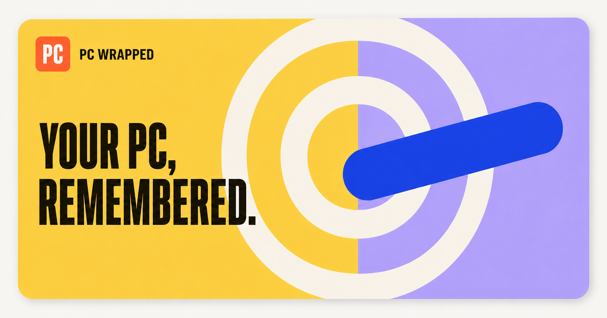

Open source · Windows · macOS · Linux
Your computer life,
played back.
PC Recap turns real app usage into visual daily, weekly, monthly, and yearly recaps. It remembers the eras, late nights, and strange little patterns that made the time yours.
lived it.
rhythm.7
story.↗
back.◌
A digital time capsule
Most trackers tell you where the time went.
PC Recap remembers what it felt like.
Your archive, in motion
How PC Recap turns computer activity into a history
A day becomes
a pattern.
Your first app. Your last session. The shape of every hour between.
Patterns become
chapters.
The Minecraft phase. The coding run. The app that quietly disappeared.
The odd details
survive.
Your 2 AM app. Your power couple. Your computer’s hardest-working moment.
Then the year
plays back.
A full-screen story of favorites, records, monthly eras, and the facts only your computer could know.
Every scale of your history
Days become years.
Built for remembering
A time capsule.
Not a time sheet.
There are no productivity scores waiting to judge you. PC Recap keeps the parts worth looking back on: favorites, records, streaks, eras, reunions, and the little facts you would otherwise forget.
See what it remembers
The app
Your history has a home.
Search it. Replay a day. Build a custom recap. Carry the archive to your next computer.
Version 1.2
Now your Mac
and Linux PC
remember too.
Windows · macOS · Linux X11
Tracking Health
See the collector, current state, permissions, and last successful sample.
Computer pulse
Optional CPU, memory, battery, and power context for the moments that pushed your system.
Honest time
Active, idle, locked, asleep, and unavailable time stay separate.
Long-haul archive
Faster analytics, daily backups, merge previews, and storage built for years of history.
No invented activity.
A new archive starts empty and grows from real sessions or imports.
Your history stays here.
SQLite on your computer, portable backups when you want them.
Read the source.
GPL-3.0 code, deterministic rules, and no external AI calls.
PC Recap 1.2.0 Beta
Start the archive.
Choose your computer. Each build is free and open source.
Unsigned beta builds may trigger Windows SmartScreen or macOS Gatekeeper.
SHA-256 checksum →